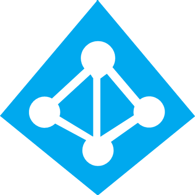

Experiencia Profesional
Infraestructura de Redes:
Configuración y gestión de redes cableadas y wifi.
Implementación y administración de VLANs.
Configuración de Routers y Switches.
Soporte Técnico:
Diagnóstico y solución de problemas relacionados con software, hardware e impresoras.
Realización de configuraciones detalladas para accesorios, discos, placas y equipos.
Gestión de Incidencias y Tickets:
Utilización de diversas herramientas y software especializado para la gestión eficiente de incidencias y tickets.
Garantía de un registro exhaustivo, documentación precisa y cierre efectivo de eventos.
Herramientas que utilizo
